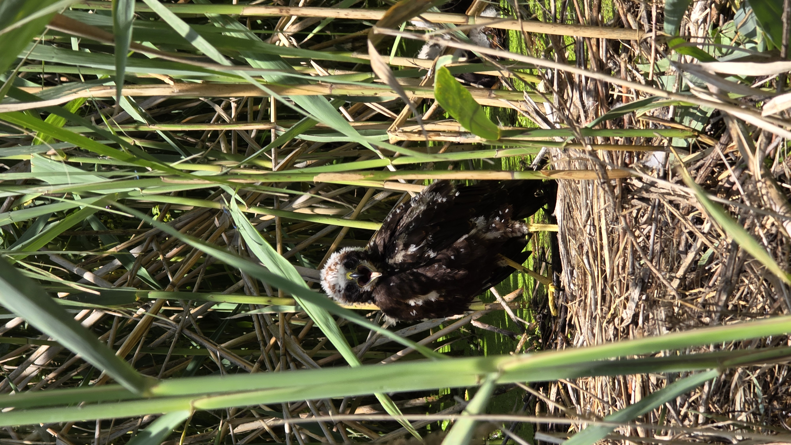
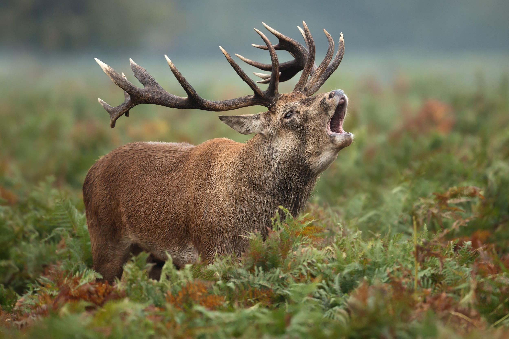
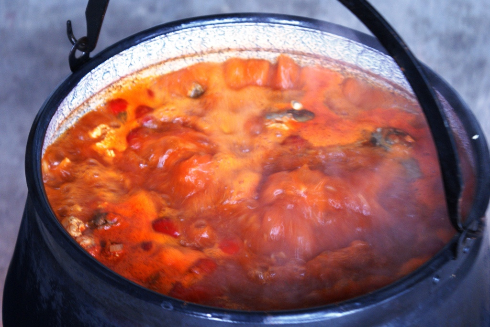

Vadleső túra
Sötétedés előtt kb. 3 órával gyülekezünk, elsősorban nyáron, hétközben amikor kisebb a vízen a forgalom evezünk egy kényelmes távot, olyan helyeket érintve, ahol a nagyvadak és hódok, vízimadarak nagy eséllyel láthatóak.(természetesen garancia nincs rá) Ezekre a túrákra a kalandvágyóbb és lehetőleg némi tapasztalattal rendelkező jelentkezőket várunk, halkan fogunk közlekedni és beszélni, a visszaérkezés már sötétben lesz.

Szarvasbőgést hallgató túra
Ezeket a túrákat szintén sötétedés
előtt 2-3 órával indítjuk, nyilván az időpont is behatárolt, augusztus
közepétől, végétől szeptember közepéig.(A bőgés kezdete évente
eltérhet néhány napot, esetleg hetet) Erre a túrára is a kicsit
kalandvágyóbb és némi tapasztalattal rendelkező túrázókat várjuk,
itt is sötétben érünk vissza, és csendesen közlekedünk és beszélünk.

Gasztronómia és vízitúra összekapcsolása
Megfelelő számú
érdeklődő esetén
lehetőség van akár a vízparton is bajai halászlé,
esetleg más „egytálétel” jellegű étel elkészítésére és elfogyasztására.